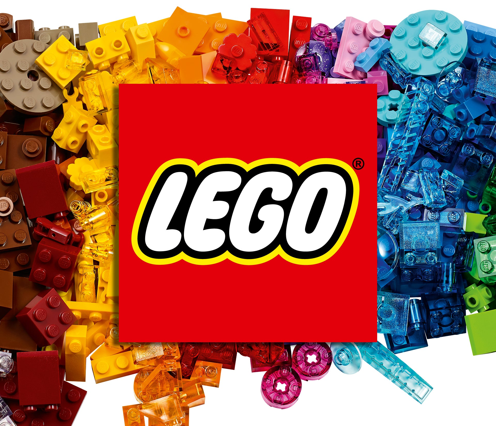
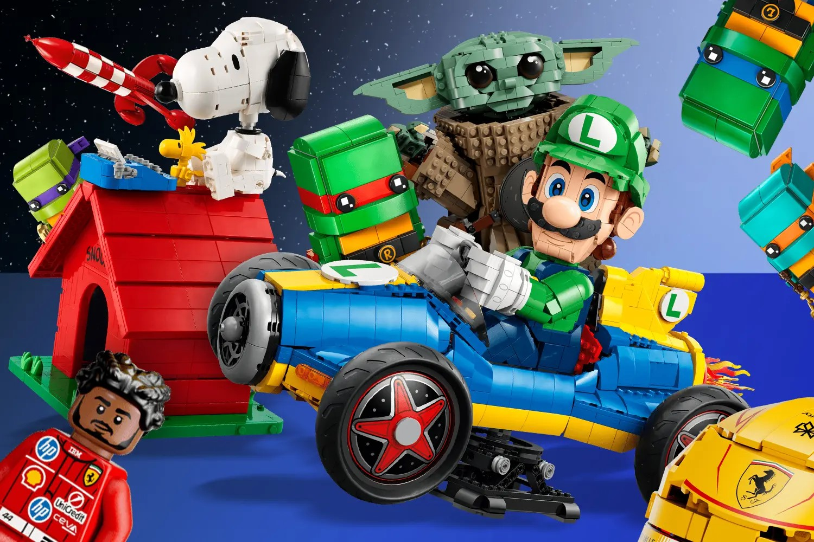
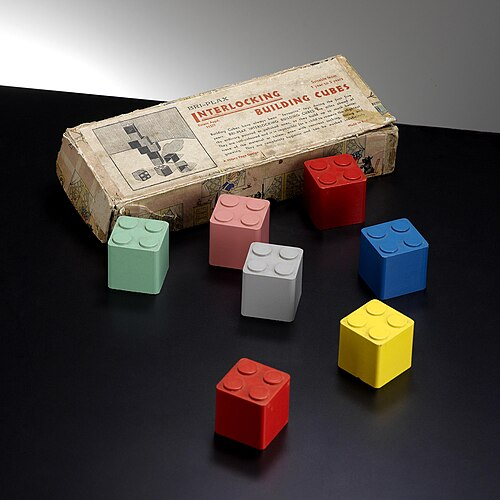
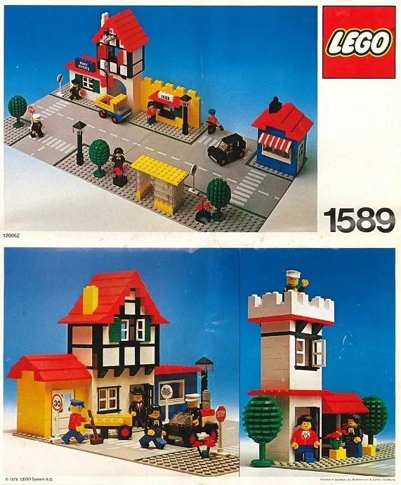

The LEGO story began in Denmark, where the company started making wooden toys before introducing its first plastic building bricks in 1949. These early bricks were different from the LEGO bricks we know today, but they introduced the idea of building different objects by connecting small pieces together. In 1958, LEGO introduced an improved brick design with a system of tubes and studs that helped the bricks connect more securely. This design became the foundation of the modern LEGO building system. Over time, LEGO created many different sets, including houses, cars, castles, spaceships, and famous characters. The bricks encouraged children to use their imagination, develop their creativity, and build their own unique creations. Today, LEGO is one of the most popular toy brands in the world, enjoyed by children and adults alike.
LEGO themes are special collections of sets based on different ideas, places, and adventures. One of the earliest themes was LEGO Town, introduced in 1978, which allowed children to build their own towns with houses, shops, cars, police stations, and fire stations. Over the years, LEGO introduced many other popular themes, such as LEGO Castle, LEGO Space, LEGO Pirates, and LEGO City. Each theme offers different building experiences and encourages children to use their imagination and creativity. Some sets let builders explore space, while others take them to medieval kingdoms, underwater worlds, or busy modern cities. LEGO also created themes inspired by popular movies and stories, giving fans the chance to build famous vehicles, locations, and characters. Today, LEGO themes include sets for different ages and interests, from simple buildings to detailed models that take many hours to complete. Whether someone enjoys science, history, adventure, or architecture, there is a LEGO theme that can inspire them to create something unique.
